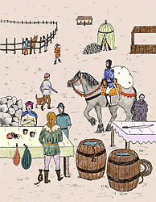

The Littlest Knight - Page 6
There was also a need for building materials to make the bridge, all kinds and shapes of wood and rock and rope and twine. Of course, with all this material they needed carts to carry it and animals to pull it so there was a run on wagons and horses and donkeys and oxen. 
Lastly, the chinaware merchants had a field day. They sold crystal goblets, wooden goblets, big cups, little cups, coffee cups, fat cups, skinny cups. To fill these cups the wine merchants and the milkmaids sold red wine, white wine, sparkling wine, cow's milk, goat's milk and all types of fruit juice.As a matter of fact, the kingdom had never known such commercial success. Nothing was left of anything resembling a sword or building material, or a wagon to hold it, or an animal to pull it, and there was not a drop of liquid left in all the kingdom but ordinary water.
What was left were sacks and sacks and sacks of money piled everywhere. And did this do any good? No. The knights for all their effort and all their supplies couldn't defeat the dragon and now the countryside was strewn with debris and the kingdom was a mess.
[ Top ]
[ Previous Page ] - [ Contents ] - [ Next Page ]Copyright ©1994 Carol Moore. All rights reserved.